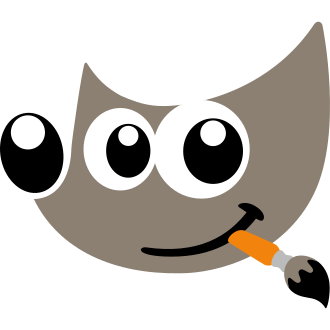
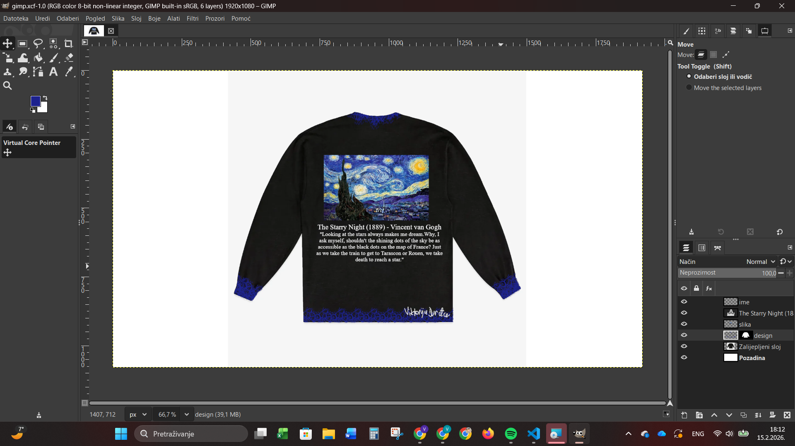
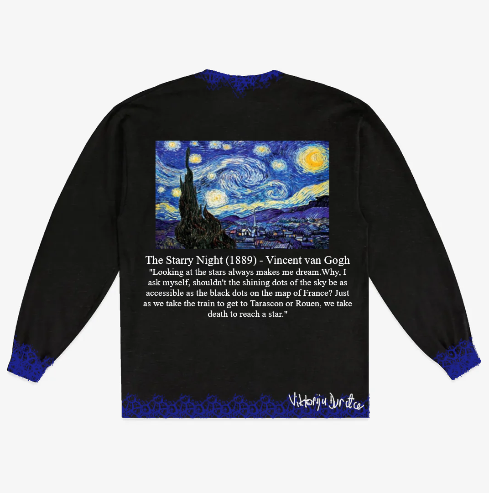

GIMP

GIMP (GNU Image Manipulation Program) je besplatni program otvorenog koda za obradu slika.
Obično se koristi za uređivanje slika, retuširanje fotografija, crtanj i pretvaranje između različitih formata slikovnih datoteka.
GIMP je besplatno dostupan na Microsoft Windowsu, Linuxu i macOS-u. Projekt je neprofitna organizacija koju podržava zajednica volontera.
GIMP podržava dodatke i skripte, omogućujući korisnicima proširenje njegovih značajki i automatizaciju zadataka. Iako nije prvenstveno namijenjen crtanju, neki umjetnici i kreatori ga i dalje koriste u tu svrhu.

Moj projekt u GIMP-u

Za ovaj projekt sam napravila dizajn majice.
Zadatake je trebao imati barem tri sloja, tekst, barem jednu masku i jednu umetnutu sliku.
Ja sam se odlučila za dizajn koji uključuje sliku The Starry Night i citatom iz pisma Vincenta van Gogha bratu Theu. Rukave, donji dio majce i ovratniku ukrasiti tamno plavom bojom pomoću kista Cell 01.